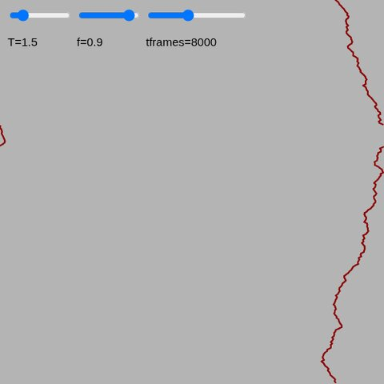
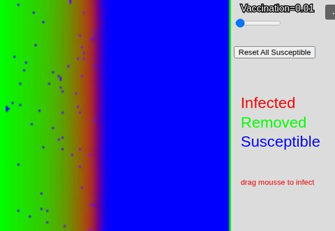
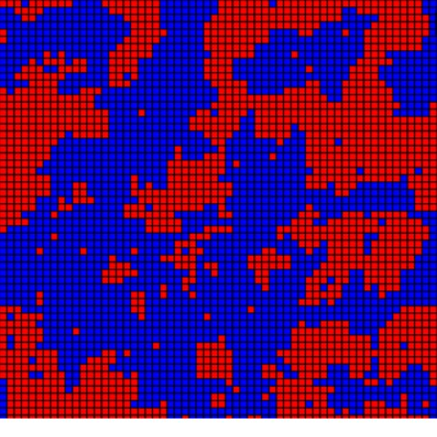
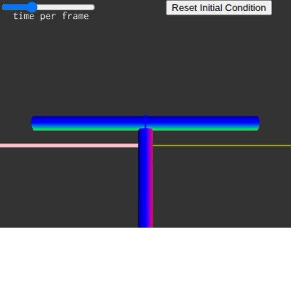
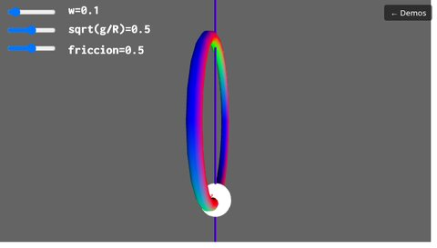
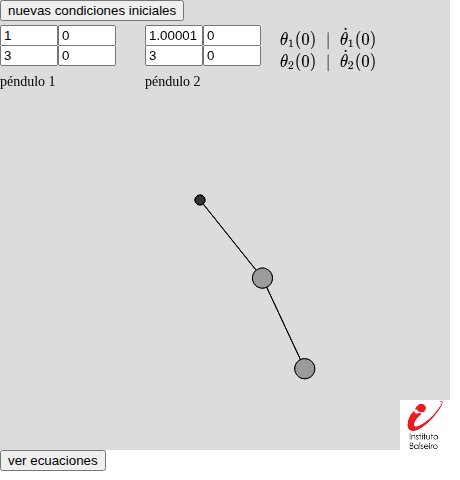
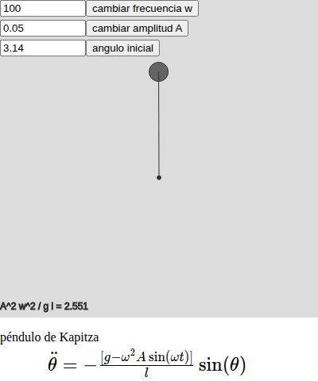

Demos
Interactive simulations built with p5.js: some are teaching tools, some illustrate questions I work on in research, and some are just for fun. Click any card to run it in your browser.
Research toys

Depinning of a disordered elastic line
An elastic line driven through a random-force landscape, integrated with overdamped Langevin dynamics. Tune the driving force and the temperature to go from pinned to moving, and watch the depinning transition and the roughening it leaves behind.

Spatial SIR model
An epidemic spreading on a 2D lattice: susceptible, infected and removed populations diffuse and react locally. Tune the vaccination level, drag the mouse to seed new infections, and watch the epidemic front propagate — or fail to.
Teaching

2D Ising model
Metropolis Monte Carlo simulation of the Ising model on a square lattice. Tune the temperature and an external field, switch between ferro- and antiferromagnetic coupling, and watch domains form and melt. Made for the Statistical Mechanics course at Instituto Balseiro.

Dzhanibekov effect — free rigid body
A free-rotating rigid body integrated from Euler's equations. Set the initial angular velocities and see the intermediate-axis (tennis-racket) instability flip the body mid-flight. Made for the Analytical Mechanics course at Instituto Balseiro.

Bead on a rotating hoop
A classic mechanics problem: a bead constrained to a circular hoop spinning about a vertical axis. Tune the hoop's angular velocity, the effective gravity and the friction to explore the bifurcation to an off-axis equilibrium. Made for the Analytical Mechanics course at Instituto Balseiro.

Double pendulum
Two double pendulums integrated with RK4 from independently adjustable initial conditions, so you can watch nearby trajectories diverge — a hands-on look at chaos. Made for the Analytical Mechanics course at Instituto Balseiro.

Kapitza's pendulum
A pendulum whose pivot is driven up and down at high frequency, which can dynamically stabilize it upside down. Tune the driving frequency and amplitude and see the stability condition update live. Made for the Analytical Mechanics course at Instituto Balseiro.